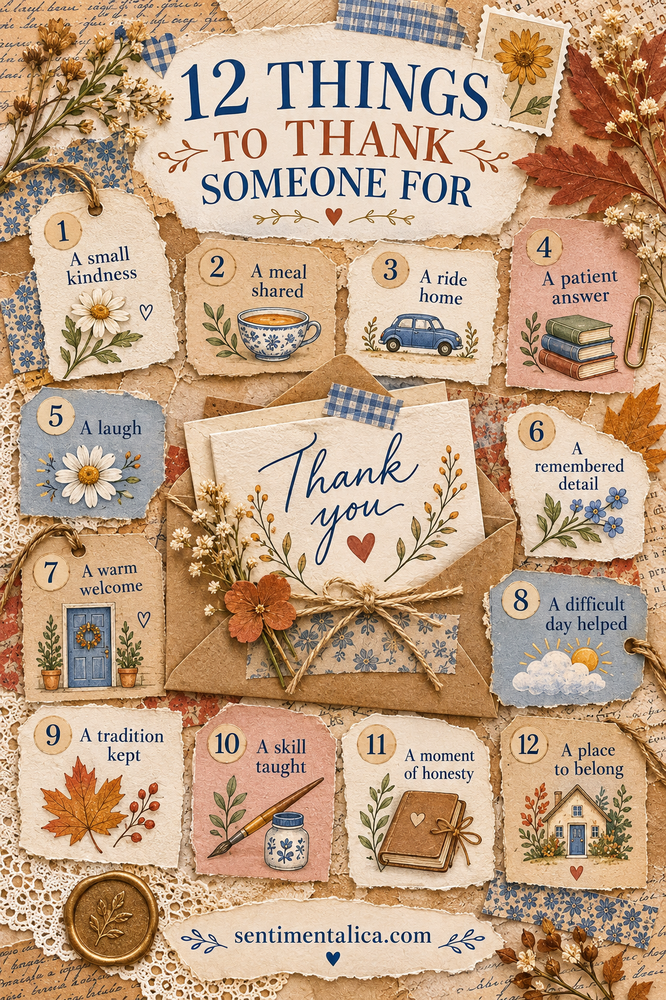
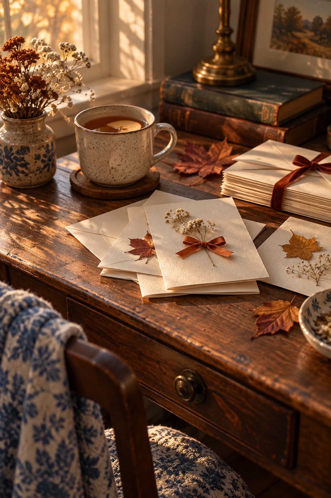

A thank-you card feels different when it names something real. “I am grateful for you” is lovely; “I still remember the soup you brought when I was exhausted” gives the person a moment they can hold.
Thanksgiving is a natural time to make these cards, but you can send one any week of the year. Begin with the words. Let the paper support them rather than compete for attention.
Choose one true detail
Think about the person for a minute before you choose a card image. What did they actually do, notice, share or make easier? If your first answer is “everything,” narrow it to one scene. A small specific memory carries warmth without asking you to write a long letter.
Here are twelve starting points:
- A small kindness that may have seemed ordinary to them.
- A meal you shared or one they made for you.
- A ride, errand or practical favor.
- A patient answer when you needed help.
- A laugh that changed the mood of a day.
- A detail about you that they remembered.
- The way they welcomed someone.
- Their help through a difficult day.
- A tradition they kept alive.
- Something useful they taught you.
- A moment when they told you the truth kindly.
- The feeling of belonging around them.
You do not need to use all twelve on one card. Pick one or two and let them become a sentence.

Build a card that leaves room for words
Fold a piece of sturdy cream paper into a card. Cut a quiet mat slightly smaller than the front, leaving a visible border. Choose one small focal image or a pressed leaf and place it above or beside a short greeting. Keep at least half the inside blank.
Before gluing, set the folded card next to its envelope. If a raised flower, wax seal or thick ribbon makes the fit tight, move that detail to the outside of the envelope or use a flat paper accent instead.
A simple palette is enough: warm cream for the base, russet for warmth, olive for a natural note, and a tiny touch of faded blue to keep the card from feeling too predictable. Repeat one color inside on a narrow paper strip, then stop decorating.
Write it in three lines
Try this structure if the blank inside feels intimidating:
“Thank you for [specific action].”
“I remember [one sensory or emotional detail].”
“It meant [what changed for you].”
For example: “Thank you for saving me a seat at your table. I remember how relieved I felt when you waved me over. It made a crowded day feel gentle.” Let your own voice be plainer, funnier or more affectionate as needed.

If you want an illustrated autumn accent
You can make the card entirely from scraps you already have. If you would like seasonal art, the live Autumn Dreams watercolor collection is an optional source to browse for a small fall image that suits your recipient. Check the listing’s current contents and usage terms before printing; the design works with any image you choose.
The best thank-you card does not prove how many supplies you own. It notices one real thing another person did, and gives that memory back to them.